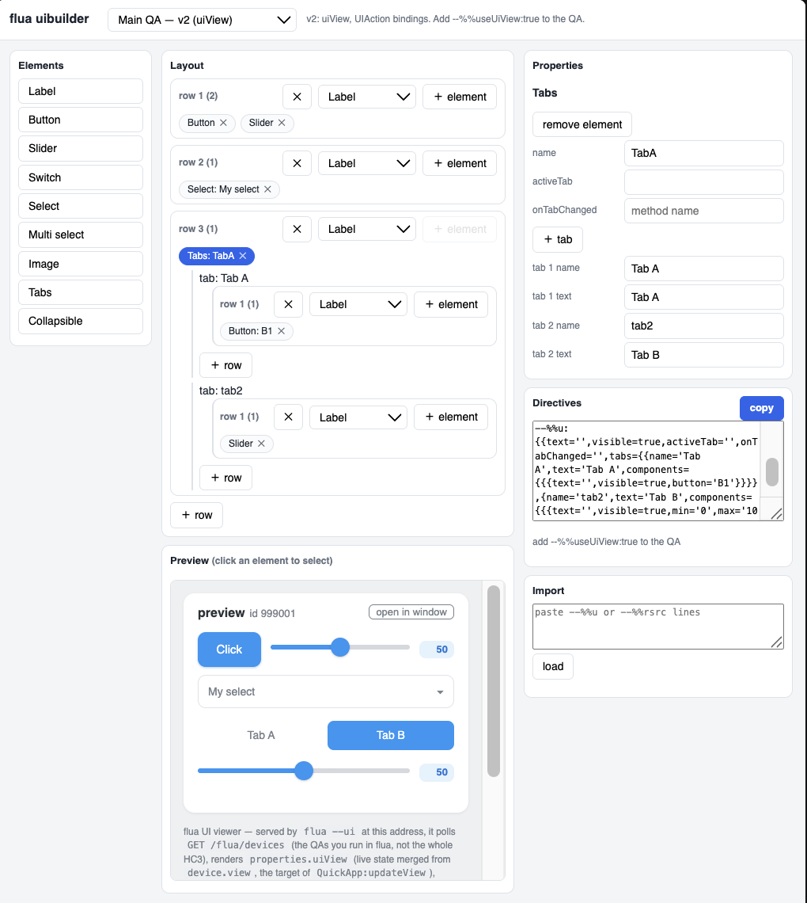

The child-devices story had one rough edge left: the UIs themselves.
Tabbed panels and collapsible sections are the modern view elements — and
the one place the HC3's editor can't touch them is exactly where they're
most useful, on child devices. Until now that meant writing
--%%u rows by hand. flua's newest tool turns that into
point-and-click.

Pick elements from the palette, they land in rows — several elements can share a row, up to ten (the HC3 editor stops at five). Select an element and edit its properties on the right: name, text, callbacks, slider ranges, options. The preview below is the real flua viewer rendering your work — what you see is what the controller will draw, down to the event bindings. When you're happy, copy the directives into your QA file:
flua --tool uibuilder -- http://127.0.0.1:<port>/
No save buttons, no files — the builder is stateless and the directives
are the artifact. Paste them in, done. (Imported existing
--%%u/--%%rsrc back? The import box parses them
into the editor.)
--%%useUiView:true
reminder on export.--%%rsrc:name:{…} block ready for
createChildDevice.Everything the builder emits goes through the same compiler as the directives you'd write by hand — the export text is generated server-side from that compiler, so the builder can never drift from what flua ships.
Run: flua --tool uibuilder · related posts:
Child UIs as resources,
The button that did nothing
· flua: https://github.com/jangabrielsson/flua